아날로그 시계 읽기부터,
1억까지 세어봤어요 🕐
A maths day, run at two levels at once — and one lesson that both groups did together, on the floor, with the biggest sheet of paper we had.

🕐 Analogue vs Digital Both groups, one big clock
Telling the time on a round clock is one of those skills adults forget is learned. On a digital display, 3:15 says 3:15. On an analogue face, the hand points at a 3 and you are somehow expected to say fifteen.
So the clock got drawn out at poster size, and both numbers were written on it: the hours inside (1 to 12) and the minutes outside in red — 00, 05, 10, 15, all the way round to 55. All sixty tick marks, one by one. Once both sets of numbers are visible at the same time, the translation stops being a mystery.
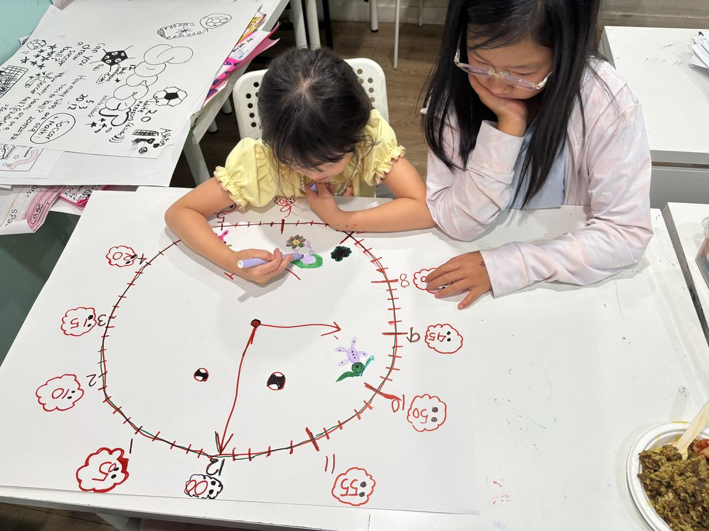
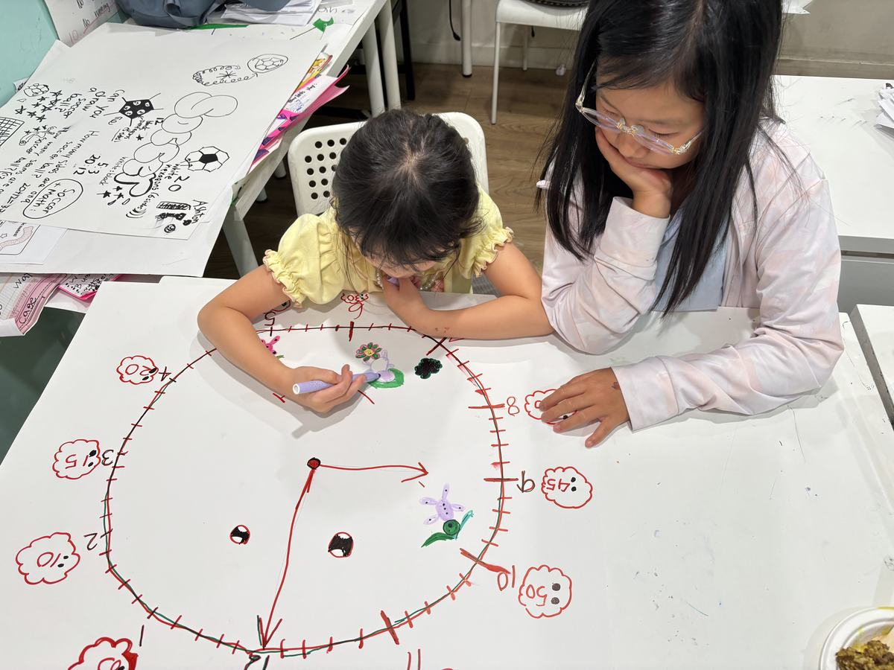
🔢 Large Numbers, up to One Hundred Million Also both groups
The other whole-group lesson: how to read large numbers out loud, and how to multiply by multiples of ten — all the way up to one hundred million.
Reading big numbers is really a place-value skill in disguise. Once a child can chunk the digits correctly, multiplying by 10, 100 or 1,000 stops being a rule to memorise and becomes something obvious: the digits do not change, they just move.
➗ The Intermediate Group Moves Up Exponents & negative numbers
The older students have been climbing steadily all summer, and today they took the next step:
Order-of-operations equations — solved correctly, which is the hard part — are now landing reliably. On top of that came today's introduction to exponents and to calculations involving negative numbers.
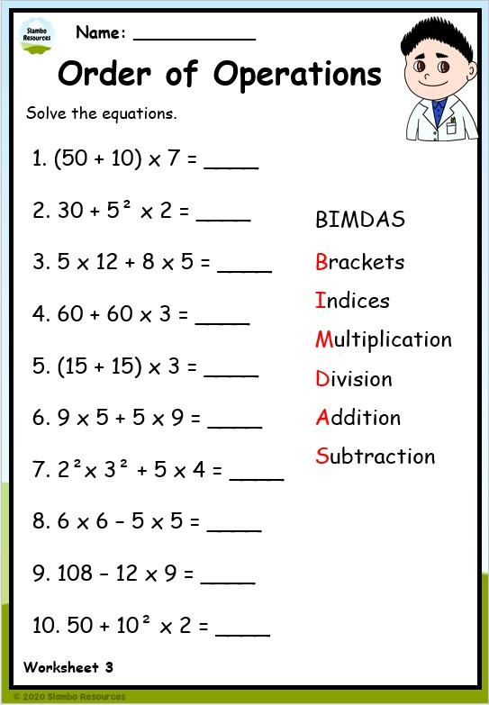
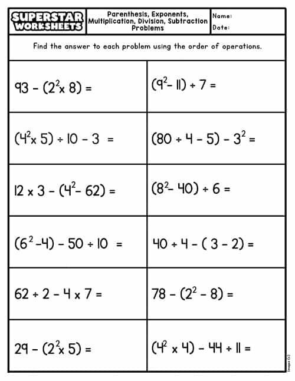
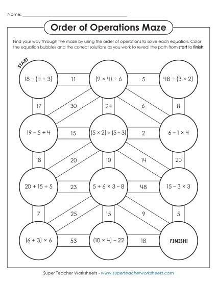
Why BIMDAS matters more than it looks
Brackets, Indices, Multiplication, Division, Addition, Subtraction. Get the order wrong and every step afterwards is wrong too — which is exactly why we practise it until the sequence is automatic, before the numbers get any harder.
➕ The Primary Group, Building Up Chosen sheet by sheet
The younger students have been working on adding and subtracting larger and smaller numbers, and pushing themselves through a series of worksheets that are anything but random. Each one is picked deliberately — for maximum exposure in minimal time, aimed at what their coming grade level will actually ask of them.
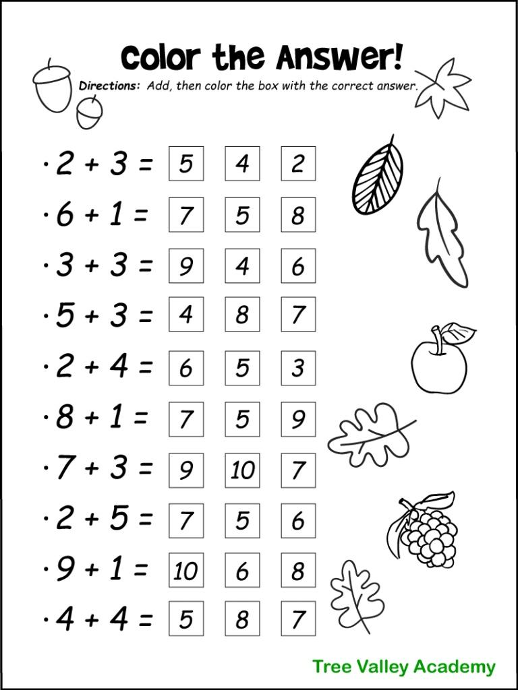
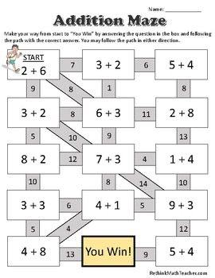
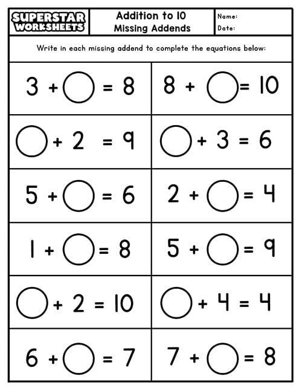
Encouraging & enjoyable
Mazes, colouring grids and puzzles mean the child keeps going without noticing how many sums they have done.
Challenging & building
Every sheet starts from what they have already shown they can do, then asks for one step more.
Note the shift hidden in that last worksheet: 3 + ◯ = 8 is not the same question as 3 + 5 = ◯. It is the first quiet step toward algebra, and they are doing it with circles and a pencil.
🍚 Lunch Fried rice, kimchi & dumplings
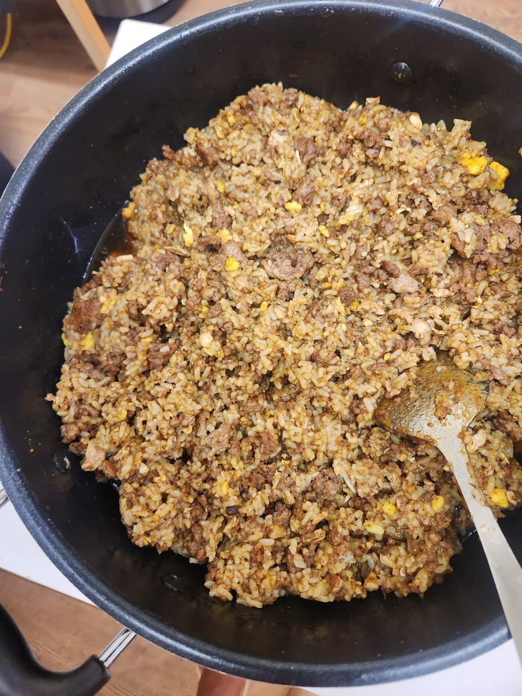
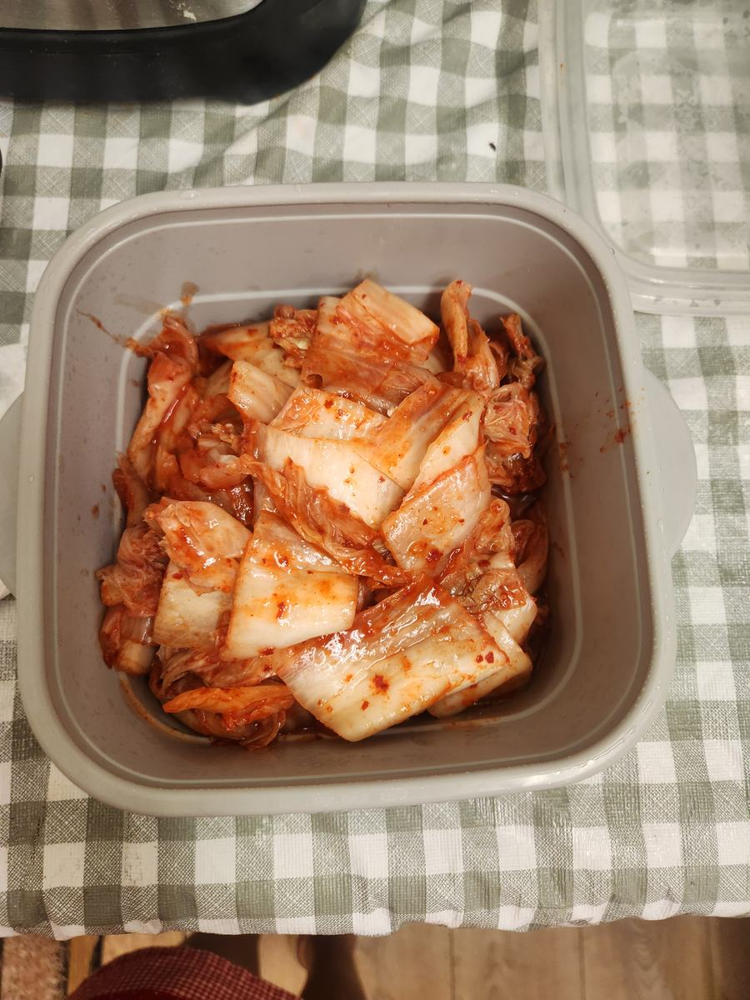
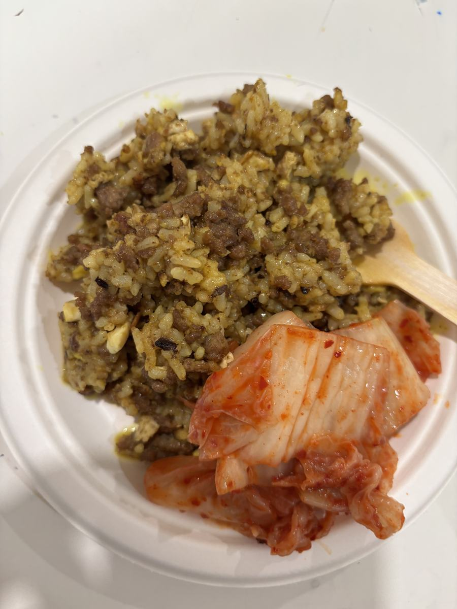
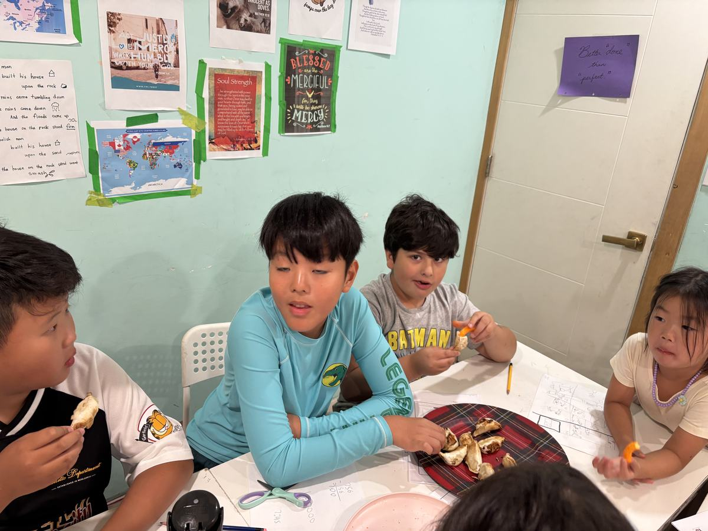
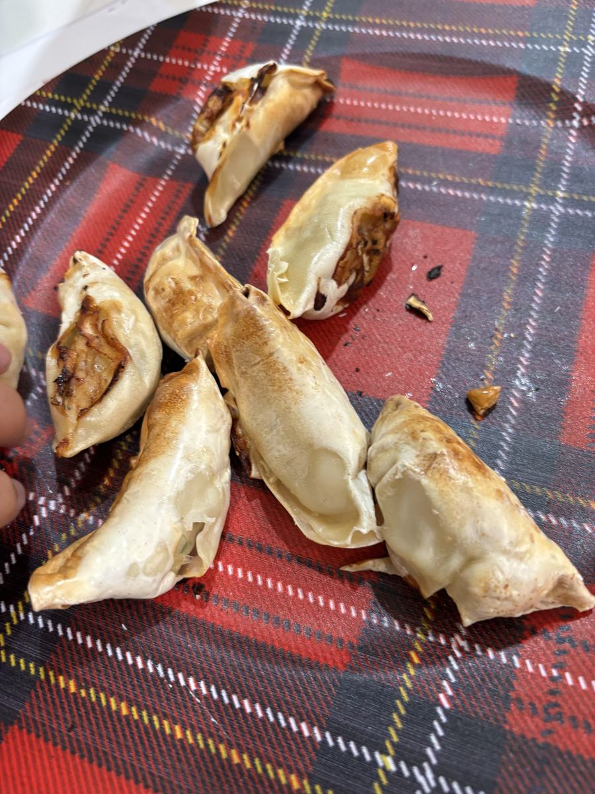
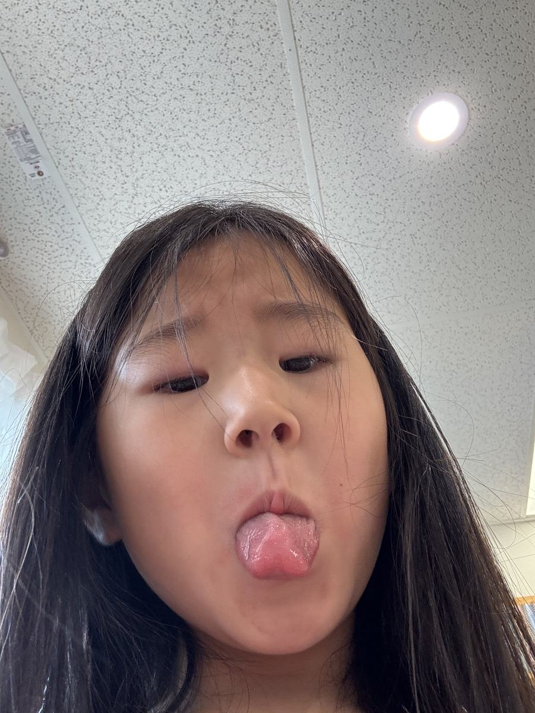
Tomorrow: the first three group presentations — including a science lesson delivered by the students themselves. We will warm up with group challenges and a short round of maths games for review first.
Ask them tonight what the hand pointing at the 3 actually means. And then ask what 10³ is. Depending on which group they are in, you will get a very different answer — both of them correct. 🕐